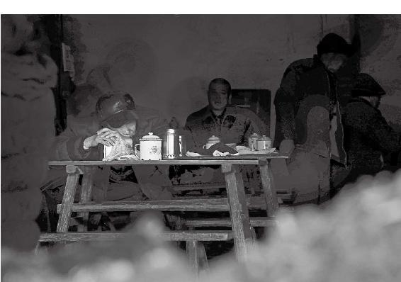
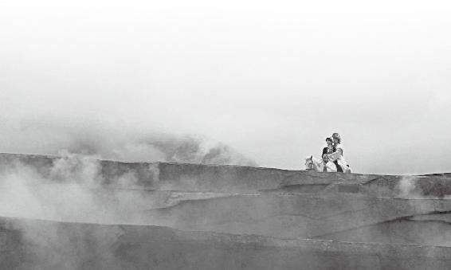
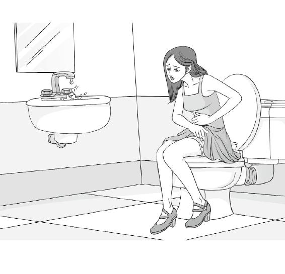
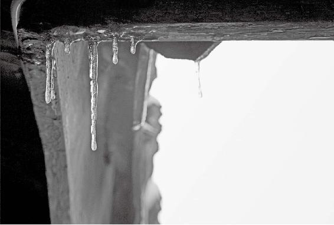
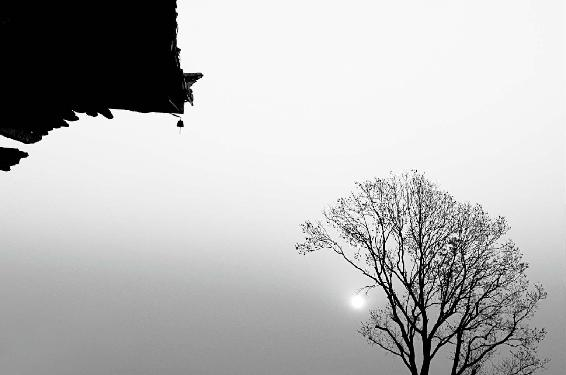
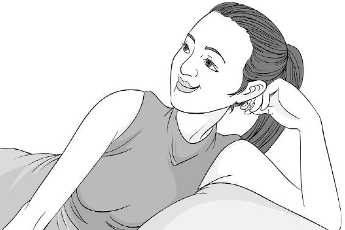
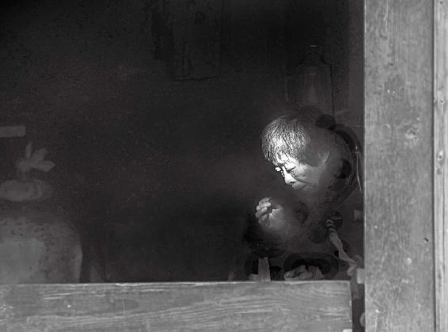

所谓猝死，就是说他没有意识到自己身体已到崩溃边缘，而把自己当正常人使用，突然就坍塌了。
健康的人不一定长寿，长寿的人不一定健康。
现在人为刻意的呼吸太多了，很多宣扬“深呼吸”的说法，其实如果经络不通却深呼吸，会出现西医所说的“过度换气综合征”。
为什么换了心脏起搏器，就失神了？
活过百岁的人，有什么秘诀吗？
为什么尖嘴猴腮的人不容易长寿？
经文：
岐伯曰：五脏坚固，血脉和调，肌肉解利，皮肤致密，营卫之行，不失其常，呼吸微徐，气以度行，六腑化谷，津液布扬，各如其常，故能长久。
黄帝曰：人之寿百岁而死，何以致之？岐伯曰：使道隧以长，基墙高以方，通调营卫，三部三里起，骨高肉满，百岁乃得终。
梁冬：前面讲的“魂魄毕具，乃成为人”，还有什么要总结的吗？
徐文兵：没有了，但是需要强调的一点就是，两精相搏谓之神，那时候产生的是我们魂魄里面的第一个魂，然后它逐渐地发展。按道家理论来讲，人在快出生的时候，最后一个魂儿，就是舍心，比如古代传说里有什么梦龙入腹中啊，文曲星投胎呀，其实那就是“魂魄毕具”的最后一道工序。到了最后呢，人顺产出生。
古代传说里有什么梦龙入腹中啊，文曲星投胎呀，其实那就是“魂魄毕具”的最后一道工序。

一个一直健康的人突然猝死，一个『药罐子』却活得很长久。看似不可理解，其实极其合理。自以为健康的人常会过度耗费自己，『药罐子』却不会如此。没有偶然，只有必然。
梁冬：这是传说。
徐文兵：古代人就是这么讲“魂魄毕具”的。
梁冬：下面黄帝又开始问他的师傅岐伯，“人之寿夭各不同，或夭寿，或猝死，或病久，愿闻其道”。就说为什么有些人就能活得长，有些人就活得短？那是什么原因呢？
所谓猝死，就是说他没有意识到自己身体已经快到崩溃的边缘了，或者是体内已经潜藏了很严重的病，而是还在那儿把自己当正常人那样去使用，最后突然就崩溃掉了。
徐文兵：就是生命的质的问题。比如说有人活得很长，但病了一辈子，这叫病久；有的人呢，活得短，而且他不是被慢性病折磨死的，是猝死。
梁冬：以前我们认为猝死都是偶然性的，其实有可能还有偶然以外的东西。
徐文兵：没有偶然，只有必然。
所谓猝死，就是说他没有意识到自己身体已经快到崩溃的边缘了，或者是体内已经潜藏了很严重的病，而是他还在那儿把自己当正常人那样去使用，最后突然就崩溃掉了。
老百姓有句话叫“歪脖儿树不倒”，说这个人病病歪歪的，一辈子都在吃药、看病，还活到七八十岁。而有些人貌似很健康，突然得一场病就过去了。
老百姓有句话叫“歪脖儿树不倒”，说这个人病病歪歪的，一辈子都在吃药、看病，还活到七八十岁。而有些人貌似很健康，突然得一场病就过去了。
梁冬：你怎么解释和看待这种病病歪歪，还能活很长的现象呢？
徐文兵：首先，一个病病歪歪的人，他不会把自己当成那种过度健康的人去使用。我们说“日出而作，日落而息”，人家会听；而那个猝死的人，就是貌似健康，对这些话不以为然的人，他就不听你的。
有一种本事叫藏精不漏
梁冬：这时，黄帝的师傅岐伯就说：“五脏坚固，血脉和调，肌肉解利，皮肤致密⋯⋯”一个一个讲吧， “五脏坚固”何解？
徐文兵：人又想健康又想长寿的条件是什么呢？岐伯回答的都是排比句，四个字一句话。第一，五脏坚固。
梁冬：我们以前说过，“脏”就是“藏”嘛，那坚固是不是指它像口袋一样能扎得住呢？
“固”就是不泄漏、不释放，什么叫固若金汤？就像用熔化后的铁水浇铸成的东西一样坚固。
徐文兵： “固”就是不泄漏、不释放，什么叫固若金汤？就像用熔化后的铁水浇铸成的东西一样坚固。
五脏本来是 “藏精气而不泄”。如果你五脏不坚固的话，那就老是在那儿泄，在那儿漏，漏的是你的精。这些精又是支持你长寿，活到天年的物质基础，物质基础没了，五脏一空虚，人不可能长寿。
梁冬：大部分人都认为“肾藏精”，但你说的意思是：其他几个脏也在藏精，各藏各的精。
五脏的每一个脏，是藏精的器官。从根本上说，根是脑髓，本是五脏坚固。前提条件就是不要漏精。
徐文兵：脑髓、骨髓、脊髓都是精髓，是藏的本质的精，它慢慢渗到各个臟腑器官里。而五脏的每一个脏，又是藏精的器官，这是中医的一个理论。《黄帝内经》讲，从根本上说，根是脑髓，本是五脏坚固。也就是说前提条件是不要漏精。
梁冬： “坚”和“固”有什么区别呢？
“固”是不漏，“坚”是充实。
徐文兵：“固”是不漏，“坚”是充实，摸上去不是那种虚虚囊囊的感觉。我们经常说这个人囊膪（nāng chuài）一个，就是说这个人不“坚”。
像夫妻之和一样
梁冬：那“血脉和调”如何解释？
所谓的调和就像两口子吵架一样，你脾气大的时候老婆就声音小点；老婆脾气大的时候，你就声音小点，这样就调和了。
徐文兵：我们经常说调和调和，什么叫“和”呢？“和”代表“不同”。另外，“和”不是平，它是一人一半儿的，但是在不同的阶段，可能你多点儿，我少点儿。还有，走在血管里面的是血，走在血管外面的我们叫气。如果血渗到脉外面了，就变成了我们的体液。所以，它也有一个进出多少的过程，这叫调和。
梁冬：所谓的调和就像两口子吵架一样，你脾气大的时候老婆就声音小点；老婆脾气大的时候，你就声音小点，这样就调和了。
肌是发力的肉，肉是放松的肌
梁冬： 什么是“肌肉解利”？
徐文兵：肌是发力的肉，肉是放松的肌。“肌肉若一”就是一人一半，所以健康之人，他的肌肉该用力的时候就发力，不用力的时候很放松。“专气致柔，能婴儿乎？”像婴儿一样有弹性。
健康之人，他的肌肉该用力的时候就发力，不用力的时候很放松。

夫妻之『和』有时候在于，你脾气大的时候老婆就声音小点，老婆发火的时候你就轻声细语一些。养生之『和』、生命之『和』的智慧都如同这样。
这个“解”，相当于松懈的“懈”、懈怠的“懈”，就是说我是能放松的。
梁冬：什么是“利”？“解”和“利”又有什么不一样呢？实际上，《黄帝内经》里面的每一个字都很值得和大家分享，比如说“肌肉解利”中的“解利”二字还不一样，解是“解”，利是“利”。
徐文兵：“解”是肌肉放松的一个状态。什么叫“利”？要想知道“利”，你就要知道什么叫不利？
我见过有人做治前列腺病的广告，画个水龙头在那滴滴答答，水不出来，这叫小便不利，就是不通畅的意思。如果肌肉不利，里面就疙疙瘩瘩，特别粗，会出现死肉，肌肉纤维化、条索化的情况。
如果肌肉不利，里面就疙疙瘩瘩，特别粗，会出现死肉，肌肉纤维化、条索化的情况。
梁冬：我们去做足疗的时候，经常好多地方出现一个个小颗粒那样的东西，这也是不利。
徐文兵：所谓肌肉，有“我能紧张，招之即来，来之能战，战之能胜，挥之即去”这么一个过程，需要我发力时，我能发力，发完力呢，松得下来。有这样的肌肉说明身体经络是通畅的。
很多人的肌肉就是死肌，摸上去吧，它老处于一种发力状态，不松懈。摸进去以后就感觉到疙疙瘩瘩的那种小颗粒，严重的叫条索化，或者叫纤维化，这叫不利，会产生气血不通的问题。
真正的腹肌该发力的时候能绷起来，该放松的时候也挺硬。
有很多病人，一摸他们的身上疙里疙瘩的。我说：“你这是有瘀血，气血不通。”他说：“不是，我练过肌肉，这是我的腹肌。”我说：“腹肌我见过，该发力的时候能绷起来，该放松的时候也挺软。你这根本就是老绷着不放松，只有通过按摩、针刺的方法才能让它变得‘解利’。”
我发现练肌肉的人有一个通病，弱不禁风！因为练肌肉分级别，“我是哪公斤级的”，为了保持体重，他要通过特殊的锻炼方法，把自己的皮下脂肪（我们叫皮肤的“肤”）练没了。肤是干吗的？保温的，防止“外贼”侵犯的。这些人把脂肪燃烧掉，变得有皮无肤。快到比赛了，他最怕的就是感冒，可他这么练就是容易得感冒。所以，治他们的病时，我就说，“你们练歪了，练偏了，练了一身死肉”。
练肌肉的人有一个通病，弱不禁风！快到比赛了，他最怕的就是感冒。
别看我柔，但是，我这个柔就像用鞭子打人一样，那个力和气能传导到末梢上，特狠。

水龙头没关严或坏了就会滴滴答答，人的身体出毛病了也一样。

柔软的力量常常胜过刚硬。就像软鞭，力和气传导到末梢，特狠。
道家的观点是什么？别看我柔，但是，我这个柔就像用鞭子打人一样，那个力和气能传导到末梢上，特狠。现在很多人得什么胃下垂，或者是瀑布型胃的毛病，就是吃完以后整个肚子就囊起来了，这叫什么？“光解不利”。他就没有收缩回来的力量。这都是暴饮暴食、吃饭不注意造成的。
胃下垂、瀑布型胃，都是暴饮暴食吃饭不注意造成的。
脂肪就是你的精
梁冬：“肌肉解利”之后就是“皮肤致密”，什么是“皮肤致密”？
徐文兵：皮是表皮。大家能看到的表皮这个纹理，叫理。理的本源是沿着玉天然形成的纹路去雕它、琢它、切它、磋它。我们能看见的叫理，看不见的叫腠。腠是细胞和细胞间的间缝。
脂肪是你的精，它可以到骨髓里面去，充盈脑髓，填精益肾。
如果你的皮肤“致密”，那虚邪贼风就进不来。这个肤就是皮下脂肪，我们现在一谈脂肪就色变，恨不得把这个脂肪全部给刮掉，对脂肪恨得要死，妖魔化。实际上，脂肪是你的精，它可以到骨髓里面去，充盈脑髓，填精益肾。还有，我们说这个人肤如凝脂，什么感觉？珠圆玉润！晶莹透亮、吹弹得破。所以说，中国人的审美是建立在健康基础上的，绝对不是那种畸形病态的美，不会把自己练得那么拧巴、扭曲、变态。所以，“皮肤致密”是你长寿的一个重要条件。
“皮肤致密”是你长寿的一个重要条件。
内外运行都要正常
梁冬： “营卫之行，不失其常”是什么意思？
徐文兵：“营”指气血在血管里面流动，“卫”是指细胞间的那个气，叫保卫你自己的气。我们《伤寒论》第一方叫桂枝汤，桂枝汤是干嘛的？调和营卫，治自汗——营卫开泄了，就是皮肤开泄了。
相对桂枝汤，麻黄汤是什么？当人受寒以后，皮肤就会收缩，但同时也把寒气逼进体内去了。怎么弄？开门逐寇。一发汗，腠理一打开，把寒邪逐出去。所以吃完了麻黄汤，人会出汗或者是冷汗涔涔，出完就好了。
“营”指气血在血管里面流动，“卫”是指细胞间的那个气，叫保卫你自己的气。
桂枝汤跟麻黄汤的不一样在哪儿呢？桂枝汤是人受寒以后皮肤没有收紧，反而又发烧，但是有自汗——就是稍微活动一下就出汗了，其实是有点漏了，这个时候，我们讲“营卫不太和了”。本来卫气的意思是“阳在外，阴之使也；阴在内，阳之守也”。本来我应该把你护住，结果却担不起这个责任来，那我怎么办？用桂枝、生姜去提高你的卫气，用酸寒白芍去收敛一下你的营气，再加点大枣和甘草平和中焦、补益中气，这就是“调和营卫”。
桂枝汤与麻黄汤分别是什么时候用？
生命是个节奏
梁冬：“呼吸微徐，气以度行。”什么意思？
徐文兵：这句中还有一个“徐”，我们老徐家的“徐”。有的人说我说话慢，因为我姓徐嘛。
梁冬：有人说我比较酷（cool），因为我姓梁。
徐文兵：什么是呼和吸？这就说到了吐纳。健康的人，他不需要张口抬肩地大口吸气、呼气，因为他呼吸的腔道里没有痰浊、瘀血堵着，所以他进出气都不费劲。
另外，细胞里的气跑到血里面再跑到细胞间里面也没有阻碍。比如说氧气进去，浊气、二氧化碳、废气出来的过程就没有阻碍，表现的就是气很顺！你在他鼻子下面放个纸片，那纸片不会哗哗哗地乱动。
不健康的人呼吸很粗、很重，你坐在他旁边都能听见他在那喘。
相反，不健康的人呼吸很粗、很重，你坐在他旁边都能听见他在那喘。有些人还会表现为不正常的呼吸，最常见的一种叫善太息，就是老喜欢叹气。常有这样的人，他自己还不觉得，别人看这人怎么就这样了。其实，心情郁闷、肝气郁结就会导致他出现这个问题。他的呼吸有两大特点，第一，不是微，而是张口抬肩的大动作；第二，呼出去的气很长，吸进去的气也很长，呼和吸之间还有一个停顿，这不是“徐”，徐是指呼吸很慢。
梁冬：我听说有一种道家的补气方法，如果你气不够的话，就呼一下，然后吸两下。
徐文兵：吸吸呼嘛。你早上去公园一看，很多人在练吸吸呼。有钱人吃人参，再有钱吃野山参。穷人怎么补气？吸两口呼一口。这其实调的是一个呼吸的节奏——生命是个节奏。
有钱人吃人参，再有钱吃野山参。穷人怎么补气？吸两口呼一口。这其实调的是一个呼吸的节奏。
梁冬：这话很深刻。
徐文兵：你还没说话，我听你呼吸那个喘气声，就大概知道你的身体状况如何。一听这人，喘气都喘不匀，进气多，出气少。
梁冬：按照这个节奏来说，很难说进去的气和出去的气不一样多吧？
徐文兵：不一样，关键是现在人为刻意的呼吸太多了。现在，好多节目都是说“深呼吸，深呼吸”。我说，如果经络不通，你又要他深呼吸，会出现什么结果？西医管这个叫“过度换气综合征”。就是觉得自己身体里面的气不够用，但又没办法去调它，就强迫自己去深呼吸。好比你们家暖气管子堵了，你不解决它堵的问题，光在锅炉房给它加压，最后把暖气管压爆炸了。
现在人为刻意的呼吸太多了。好多节目都是说“深呼吸，深呼吸”。如果经络不通，你又要他深呼吸，会出现什么结果？西医管这个叫“过度换气综合征”。
一般怎么调这个过度换气综合征呢？拿一塑料袋套头上。其实就是让他放弃意识，恢复自我的呼吸。如果你不用这个方法，唯一的方法就是一个——睡觉去！睡觉放弃意识，让心神自个儿调呼吸。
人睡着以后，呼吸是变的，醒的时候，呼吸的节奏和睡着时不一样。另外，通过站桩，你会发现慢慢呼吸就匀了、通了，甚至会咳出几口痰。原来吸气吸不到丹田，在那儿站了半天，嘿，吸到丹田了。就像海浪拍沙滩一样有个节奏，到时 “啪”就把它拍走了，正好打在那个点上，简单粗暴，直接冲破。这是靠神去调的。
睡觉也是调呼吸的一个办法。
梁冬：心神。
徐文兵：我的理解是：心神是整个身体节奏的把握者，好像那个音乐指挥家一样。以前，我老觉得指挥家没干什么，永远在做一件事情，画三角，画三角……我想，不是有乐谱吗？大家看着拉就完了嘛！还要他干吗？后来我知道了，指挥家是在统一大伙的心神。
心神是整个身体节奏的把握者，好像那个音乐指挥家一样。
梁冬：很多人都觉得心脏就是一个跳动，泵压的一个地方。换了这个心脏起搏器之后，就失神了。为什么呢？
徐文兵：我们说心藏神。心怎么跳？号脉的时候，我们第一号“心率”，就是一分钟跳多少下。另外，要号 “心律”，其实就是号心跳的一个节奏——律动。
心是靠先天的神明去调的。我该做什么工作了，见到美女了，心情激动了，它跳多少节奏？跑步的时候多少节奏？休息吃饭的时候多少节奏？它会自主地调节。你安上心脏起搏器呢？它就按照人为设定的频率去调。其实，我们的心不光是在跳，心还会颤，比如房颤。
为什么换了心脏起搏器后，就失神了？
有时，我号有的人的脉，能感觉到他不是这种“up and down”，他是左右的，还会颤，这种人都受过大的惊吓。
任何惊吓都是对神明的干扰，中医有句话叫“怒则气上，恐则气下，惊则气乱”。乱是乱什么？乱到神明了。我有一个病人，一号他的脉，颤得厉害，我说你是不是受过什么大的惊吓？他说：“徐大夫，我撞过一次车，差点过去。从那以后，就落下这么个病根儿。”
任何惊吓都是对神明的干扰。
梁冬：像这种情况通常怎么调呢？这是调神的问题吗？
徐文兵：就调那个神，调那个节奏。所以，这个“呼吸微徐”讲的是个节奏。在“呼吸微徐”的状态下，气就能按照健康状态运行，就好像一个波浪打一个波浪，打得特别远。
梁冬：这就是传说中的无为嘛！你不要去干扰它，你自己的身体自有一种智慧。
什么叫 “气以度行”？就是说气的流动也有一个波浪，有一个节奏，是处在“呼吸微徐”这种状态推动下的。
徐文兵：我们上物理课的时候，都学过长波、短波。什么叫 “气以度行”？就是说气的流动也有一个波浪，有一个节奏，是处在“呼吸微徐”这种状态推动下的。
《道德经》管这种呼吸叫“橐龠（tuó yuè）”。“橐龠”就是风箱，你拉风箱，外面空气进去；你一推风箱，这个口闭合，那个口开，然后空气就打到灶里。
我小时候的主要工作就是拉风箱，自打有了电吹风机以后，我就解放了。如果心脏给一个节奏，肺给另一个节奏，比如你心情特别激动的时候，肺的呼吸就跟不上，心和肺本来是相克的，火克金嘛！所以，当你呼吸微徐的时候，你吸进去的清气就能走得很远，渗得很深，这就叫健康。
如果你呼吸浅、呼吸短、呼吸急促的话，身体就要出问题。
当你呼吸微徐的时候，你吸进去的清气就能走得很远，渗得很深，这就叫健康。
梁冬：所以，人家学量子物理学的都说“生命就是个波”嘛！炒股就是炒波段。我们以前认为这是偶然现象，但其实是整个点上不对。
徐文兵：生命就是个波，而且踩着点很重要，否则，就像我们经常说的“一步错，步步错”。
生命就是个波，而且踩着点很重要，否则，就像我们经常说的“一步错，步步错”。
不是自己身上的肉长不住
梁冬：接下来讲“六腑化谷”。请问什么叫六腑？
“呼吸微徐，气以度行，六腑化谷，津液布扬。” 这种句式是汉朝的，就像是一首汉赋！读起来真是很好听。
徐文兵：六腑是胃，小肠，大肠，膀胱，胆，三焦。
“化”是分解、转化的过程。你把猪肉变成了大块、小块，变成了乳糜，这叫“消”。消完了以后呢，又把它分解成氨基酸。氨基酸再重新组合成人的蛋白质结构，这叫“化”。从消到化，这是性质的变化。
什么叫“五谷为养”，就是把外界给你的“谷”转化成你的“精”、你的“气”。我们整天说吃饭，吃饭是吃五谷！菜和肉是下饭的。现在人改了，吃菜吃肉不吃饭。
菜和肉是下饭的。现在人改了，吃菜吃肉不吃饭。
梁冬：饭是为了让这菜没那么咸，太油啦，实在太油了。
徐文兵：所以，前面讲了“五脏坚固”，这边讲了你能把外界给你的那个“谷”，转化成你的“精”、你的“气”，这是维持你的健康和长寿的一个必不可少的条件。
说起来，化谷很简单。举个例子，我们嚼馒头，吃一口馒头觉着甜。这就是化了，为什么呢？唾液本身就有酶——唾液淀粉酶，能把多糖的淀粉变化成单糖。多糖不甜，单糖甜。当人饿的时候吃口馒头，哎哟，吃出甜味了，好！能化谷！
“消化消化”，其实消是消，化是化。这个“化”呀，正好能把一个异类化成自己的同类。老百姓说不是自己身上的肉长不住！
梁冬：要想知道自己健康不健康，怎么办呢？拿一碗米饭或者拿个馒头，好好地嚼一下，感受一下它的甜味。相信很多朋友，早已久违了那样的快乐。
徐文兵：大家老说“消化消化”，其实消是消，化是化。这个“化”呀，正好能把一个异类化成自己的同类。老百姓说不是自己身上的肉长不住！很多人说吃这个、吃那个，我说你怎么不关心能不能化得了它？你要是化不了它，吃进去都是毒药！而最容易化的就是五谷。
很多人说吃这个、吃那个，我说你怎么不关心能不能化得了它。你要是化不了它，吃进去都是毒药。而最容易化的就是五谷。
有些东西，你能消化，就能滋养身心；化不了它，就是毒药。
活得好，要靠“活水”滋润
梁冬： 什么是“津液布扬”？请问“津”和 “精”，有什么不一样？
比较黏稠的叫“液”，比较清稀的我们叫“津”。
徐文兵：比较黏稠的叫“液”，比较清稀的我们叫“津”。“津”和“液”都属于精气神的“精”，都归于它。
除了“津”和“液”的这种形态，“精”还有半固体状的，比如说脂肪，那也是精；骨髓、脑髓，这也是“精”。所以，由半固体转化成液体，就变成了津和液，比较黏稠的我们叫血液、唾液。
当你六腑能化谷，喝进去的水也能转化成自己的体液。再加上肾精和所吃的五谷之精，都变成了津和液！你就会非常健康！但是，如果津和液是一潭死水的话，那就不健康了，很危险。可爱的岐伯在这儿说了一句话， “津液布扬”。
如果津和液是一潭死水的话，那就不健康了，很危险。
梁冬：“布扬”就是那种气运南山、渗在全身的感觉。什么叫“布”？就是遍布、分布嘛，平均分配。
徐文兵：恐怖的“怖”，就是这个“布”，加一个竖心儿。“怖”是什么？就是一种恐的感觉散布到全身，甚至是整个空间里面。本来，“恐”是心里面发紧，先“恐”后“怖”，一下颤栗到全身了，那叫“怖”。
津液布扬后，眼睛不干，鼻子也有黏液，但不会鼻涕连天，因为有黏液的滋润，当你吸进去灰尘，就把它粘住了。
“津液布扬”就是说，六腑化谷以后，就像老公在外面挣钱了，交给老婆，老婆一吸收，这是脾！脾干吗呢？把它输布到全身，哪儿需要送到哪儿。这样，眼睛不干，鼻子也有黏液，但不会鼻涕连天，因为有黏液的滋润，当你吸进去灰尘，就把它粘住了。
你去干漱口，一会儿就唾液满口，津液润泽，这就是把津液给你输布到全身的结果，也能让你的皮肤水润。
还有，你去干漱口，一会儿就唾液满口，津液润泽，这就是把津液给你输布到全身的结果，也能让你的皮肤水润。现在人都用什么保湿液，从外面弄。如果津液能够布扬的话，不用这些，你的皮肤自然就是润润的，想不润还不行。
还有，水的性质是什么？往下走，是润下的。那我们全身如果没有这个正常功能的话，就会变得上面水肿、下面干。所以，“津液布扬”后面用了一个字——“扬”。就是把水从地下抽出来，然后扬出去，让它输布到高处，这叫“布扬”。
“津液布扬”后面用了一个字——“扬”。就是把水从地下抽出来，然后扬出去，让它输布到高处，这叫“布扬”。
梁冬：所以，一个人的头发如果发干的话，就说明身上水汽的布扬功能不足。
徐文兵：好多人说头发出油不好。有人说，得癌症的人头发才是干的。确实是，人到临死的时候吧,头发全跟过静电一样，一根儿、一根儿直棱棱的，特别干，特别燥。所以，现在头上出油，说明你还健康，津液还在布扬。
头上出油，说明你还健康，津液还在布扬。
中医保健的根本
梁冬： “各如其常，故能长久。”我觉得这句话很厉害。“各如其常”是什么意思？
五脏就该坚固！六腑就应该传化！如果是这样的话，就“故能长久”。这句话，我建议大家一定要写下来，念一念。
徐文兵：该怎么样，就怎么样，五脏就该坚固！六腑就应该传化！如果是这样的话，就“故能长久”。这句话，我建议大家一定要写下来，念一念。
其实，这段话就是中医保健的根本。好多人说，你们中医治不了病，你们保保健还行。这么说也行，但是保健的思想和目的是什么——“故能长久”。

什么事情，都要看得长远。
人体好风水
梁冬：黄帝曰：“人之寿百岁而死，何以致之。”什么意思？
徐文兵：在这段话前面，黄帝问的是普通人一般能活多少寿啊？六十或者六十多？怎么保证？这段话黄帝问的是什么？普通人群里面一些活过百岁的人，他们有什么特殊的秘诀吗？
活过百岁的人，他们有什么特殊的秘诀吗？
梁冬：岐伯曰：“使道隧以长，基墙高以方。”
徐文兵：岐伯说，从面相上或者从遗传上来说，这些人就跟别人不一样。
首先，他们 “使道隧以长”。“道”鼻子，鼻腔，“隧”,隧道。也就是说，长寿的人鼻子、鼻腔比一般人要高、要深、要长。
长寿的人鼻子、鼻腔比一般人要高、要深、要长。
梁冬：“基墙高以方”是什么意思呢？
徐文兵：“基”是地基，“墙”是在地基上面垒起来的那面墙。基墙反映在脸上就是两颊、下巴。
我们经常说这个人 “天庭饱满，地阁方圆”。地阁方圆就是 “基墙高以方”。像尖嘴猴腮、尖下巴的人就不大容易长寿！
为什么尖嘴猴腮、尖下巴的人不大容易长寿？
梁冬：有很多女青年本来脑门还挺宽阔的，“刷刷刷”，整容了。

徐文兵：那叫折寿嘛！“楚王好细腰，宫中多饿死。”
梁冬：很多女主持人都是这样子的。
徐文兵：追求一种病态的东西，把自己的寿给折了。为什么呀？“基墙”其实代表的是我们的胃。我们咬食物时，咬肌的高点叫颊车——下颌关节。我们咀嚼的功能就在这儿。
所以，“基墙高以方”的人消和化的功能强，能够很好地把后天的五谷转化成自己的精气神。
“基墙高以方”的人消和化的功能强，能够很好地把后天的五谷转化成自己的精气神。
这两句话很简单，但是说了两个事。“使道隧以长”，鼻子通的是气。“基墙高以方”，吃的是米。“米“上面一个“气”，整个合起来就是一个“气”(气)。这些人气就足哇！
《道德经》里说 “谷神不死，谓之玄牝（pìn）”。 “玄”指空气，“牝”是吃饭。一个通天气，一个通地气。天气地气一合，人当然就长寿！
梁冬：所以，鼻子这个地方是天，嘴吃的是地，中间这段叫人中。天地人，这是三才。
自己体检的智慧
梁冬： “通调营卫，三部三里起”，什么意思呢？
“三部” 有脉，“手三里”“足三里”隆起代表了气足，胃、大肠的消化功能好。这样的人一般身体没啥问题。
徐文兵：前边说过了调和营卫，意思是说在血管里流动的气血和血管外流动的卫气，它们第一是通的，另外它俩是和的。调就是调和嘛！营卫不和就会出现漏汗，不停地漏自己的精气。如果它是通畅，又是调和的，就能保护身体不受外界的侵害，这叫通调营卫。
另外，“三部三里起”是我们讲的检查自己、病人的经络腧穴后发现的一个体征，它不是病症。什么叫三部？我们号脉叫上、中、下三部：上部要摸一下颈动脉，中间呢我们摸一下手，下面我们要摸一下跗阳脉。
如果人表现出的是：起，有脉，而且有一些隆起，那他的气就是足的。三里呢，有人把它叫“足三里”“手三里”。足三里代表了胃的消化功能，手三里代表“大肠的传导之官，变化出焉”，也具有一个化的功能。所以，一看这上、中、下三部有脉，再一摸手三里、足三里处肌肉是隆起的，或者你能感觉到那有气，就说明身体没啥问题。
梁冬：金庸武侠小说里的武林高手，连太阳穴都是鼓起的。
金庸武侠小说里的武林高手，连太阳穴都是鼓起的。
徐文兵：练不同的功后，就有这样的反应。
长寿之人的相
梁冬： “骨高肉满，百岁乃得终”，就是说你一看有些人的眉骨很高，然后肉又很充实，就有长寿的可能。
看有些人的眉骨很高，然后肉又很充实，就有长寿的可能。
徐文兵：好裁缝给人做衣服，打眼一扫，给你一量，有的也不用量了，大概一看，衣服就做得挺合适。但有一些人，裁缝一看便开始做，但做出来的衣服总是穿不进去。什么原因呢？骨高肉满，这些人就是骨架子，肌肉跟一般人不一样。

依据中医来看，古代的相面术并非完全没有依据。因而，看待事物不可完全持完全怀疑态度。
梁冬：怎么个“骨高肉满”法呢？
徐文兵：骨头有一种狭义的解释。“骨”指的是什么？就是颅骨，天庭饱满，是说它是隆起的，而且前额很高。
“骨高肉满”，既代表肾精充足，又代表后天之气也充足。这些人一看，哦，长寿的命！
还有个解释，骨高是指“印堂”，这儿也是鼓鼓的。肉满是什么？肌肉是丰满的，不管它在发力还是不发力都是满的。以前我们讲的肌肉满壮，也是这个道理。骨，代表肾；肉，代表后天脾胃。
所以，“骨高肉满”，既代表肾精充足，又代表后天之气也充足。这些人一看，哦，长寿的命！
不能说古代的相面术完全没有根据。
梁冬：所以，不能说古代的相面术完全没有根据，其实，很多的相面术也来自于中医的一些基础。我们有这样的内脏，才会有这样的外在表现。
徐文兵：你有物质基础，才会有这个结构，才会诞生相应的气血流通的方式，才会产生你的 “神”或者是你的思想。这是符合唯物辩证法的。
“骨”指的是什么？天庭饱满，就是颅骨是隆起的，而且前额是高高的。